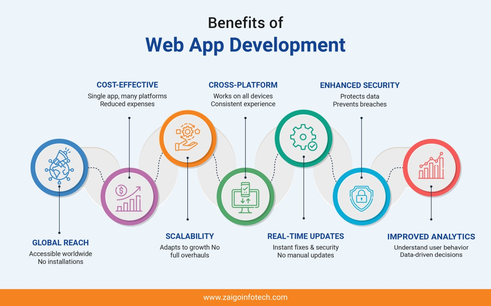
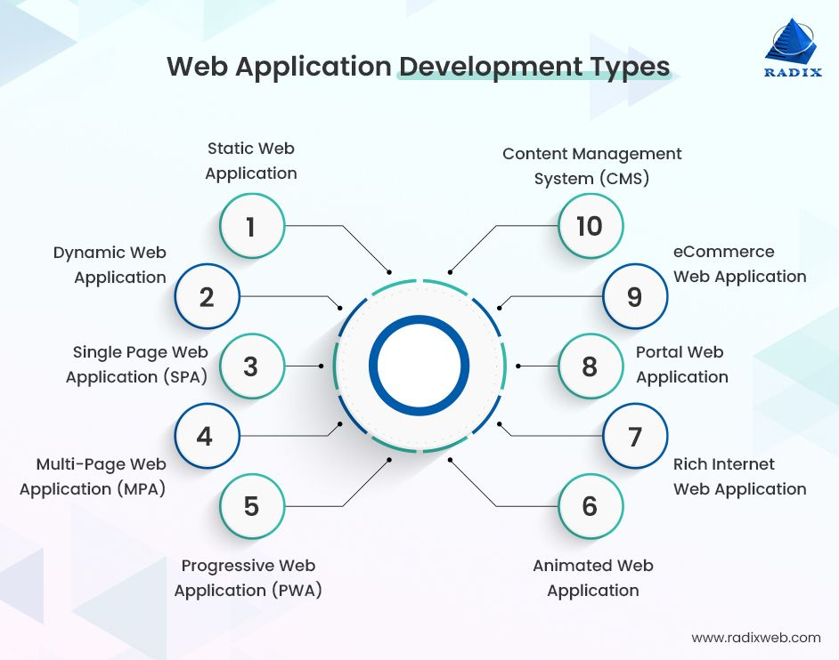

Introduction
*Web applications are software programs that run on a web server and can be accessed through a web
browser over the internet. They have become an integral part of modern technology, offering a wide range
of functionalities from communication, entertainment, and productivity tools, to online shopping and
banking. One of the key advantages of web applications is their accessibility; users can interact with
them from any device with a browser, without the need for installation. This flexibility, combined with
cloud storage, allows users to access their data from anywhere.
*Moreover, web applications are easier to maintain and update compared to desktop software. Since they
run on a central server, updates are implemented on the server-side, making it instantly available to
all users without requiring individual installations. They are also scalable, allowing businesses to
expand functionalities as needed without overhauling the entire system.
*However, web applications also come with challenges. Security is a major concern, as they can be
vulnerable to cyberattacks like SQL injection, cross-site scripting (XSS), and data breaches. Developers
must implement strong security measures to protect user data. Additionally, web applications depend on
internet connectivity, which can limit their use in regions with poor network access.
*In summary, web applications are a powerful tool for providing services and interacting with users
globally. They offer significant benefits in terms of accessibility and maintainability, though
developers must balance these with robust security and performance measures to ensure user trust and
reliability.
Benefits

1. Cross-Platform Compatibility*
One of the biggest advantages of web page applications is their cross-platform compatibility. Since web
apps run in browsers, they can be accessed on any device with internet connectivity, regardless of the
operating system. This means users can seamlessly switch between desktops, smartphones, and tablets
without needing to download or install separate versions of the app for different devices.
2. Easy Maintenance and Updates*
Web applications are centrally hosted on a web server, making maintenance and updates easier compared to
native applications. Any updates or bug fixes only need to be applied to the server, and all users
instantly get the updated version the next time they access the app. This eliminates the need for users
to manually update software, providing a more efficient and consistent experience.
3. Cost-Effective Development*
Building a web application is generally more cost-effective than developing native apps for multiple
platforms like iOS, Android, and Windows. Instead of creating separate codebases for different
platforms, developers can build a single web app that runs on all devices. This saves time, resources,
and development costs, especially for businesses looking to minimize their upfront investment.
4. Wide Accessibility*
Web apps can be accessed anywhere, anytime, as long as the user has an internet connection. This level
of accessibility is a major advantage for users who need to use applications on the go or from various
locations. Furthermore, web apps are not restricted by app store policies, which means businesses can
deploy them faster without needing approval from app store platforms.
Classification

-A web application is a software application that runs on a web server and can be accessed through a web
browser. There are several types of web applications, each serving different purposes based on their
functionalities and features.
-Static web applications are the simplest type, typically consisting of HTML, CSS, and JavaScript files
that deliver fixed content to the user. These applications do not interact much with databases or handle
user input dynamically. Examples include personal blogs and portfolio websites.
-Dynamic web applications are more complex and allow for real-time interaction and data manipulation.
These apps communicate with a database, enabling users to input data and receive personalized responses.
Technologies like PHP, Python, and Node.js are often used for dynamic content delivery. Examples include
social media platforms and e-commerce sites.
-Single-Page Applications (SPAs) provide a smooth user experience by loading all necessary resources
initially and dynamically updating content without reloading the entire page. JavaScript frameworks like
React, Angular, or Vue.js are often used in SPAs, which are ideal for applications requiring fast,
seamless interaction, such as Gmail or Google Maps.
-Progressive Web Applications (PWAs) blend features of traditional web applications with those of mobile
apps, offering offline capabilities, push notifications, and native-like experiences while running in a
browser. PWAs are increasingly popular because they are cost-effective to develop and maintain compared
to separate mobile applications.